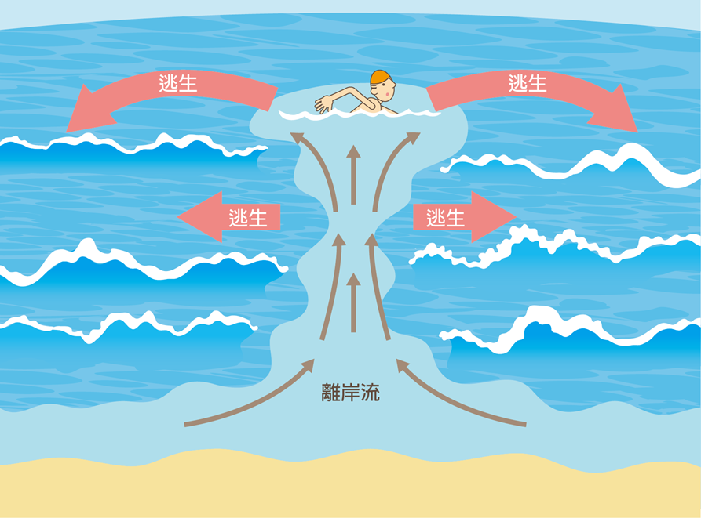

中角灣即時資訊與安全
天氣潮汐 · 海域安全
天氣預報
--°C
載入中...
📍 金山區 · 中角灣
🌡️ 體感舒適度
--
🌧️ 降雨機率
--%
⚓ 採集評估
評估中...
今日潮汐
載入中…
確認中...
00:0006:0012:0018:0024:00
載入潮汐資料中…
⏰ 建議採集時段：退潮後 1 小時（潮高 < 30cm）至潮水回漲前
—
基準：相對當地平均海面
離岸流安全教育

離岸流是從海岸向外海流動的強勁水流，速度可達 每秒 2 公尺。中角灣礁石縫隙處特別容易形成離岸流。若不幸被捲入，切勿頂著水流游，應保持冷靜，斜向（平行海岸）游出流速帶後再游回岸邊。
正確採集與規範
永續共生 · 保護海洋
大小規範 (手機螢幕 3 公分)
3cm
✅ 最低標準 (請以螢幕實際大小比對)
請將找到的笠螺直接放在螢幕上的圓圈比對。若小於這個圓圈（3公分），請輕輕放回原礁石，讓牠繼續生長。
正確採集步驟
1
鐵片貼緊礁石表面
從笠螺側邊水平插入，勿從正上方垂直戳入，以免破壞礁面。
2
快速側向撥動
一次快速動作讓笠螺脫落，避免反覆撬動。
在地笠螺料理
品嚐海的滋味

台灣常見料理方式
1
蒜味醬醃 (在地最推)
汆燙後加入醬油、蒜頭、辣椒與香油，冰鎮醃漬一晚，是最棒的下酒菜。花笠螺帶微苦甘味，斗笠螺鮮甜爽脆。
2
九層塔快炒
熱鍋爆香薑絲與蒜末，大火快炒笠螺，起鍋前加入大量九層塔，香氣四溢。
3
原味清湯
加入薑絲煮成清湯，最能品嚐到笠螺本身的鮮甜與海味。
中角灣採集文化
在地記憶 · 世代傳承
「苦丕仔」的滋味
金山長輩將花笠螺稱為「苦丕仔」。退潮後家家戶戶下礁採集，是夏日餐桌上的常客。
老一輩的規矩
長輩流傳：「大的採，小的留」「春天不採」。這些智慧正是現代海洋保育的精神所在。